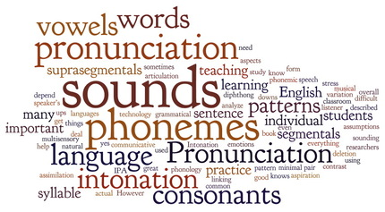

Welcome to Phonology!

In this site you will find the contents of the second unit (Phonology). In the Theory section, you will find the following concepts that you have learned in class: Phonemes and allophones, minimal pairs and minimal sets, syllable, phonological processes (assimilation, coalescence and elision) and suprasegmentals (stress and intonation). In the Practice section you will find a set of activities to reinforce your knowledge. Remember this is a theoretical-practical course so check out both sections if you want to have a high performance. Have fun!